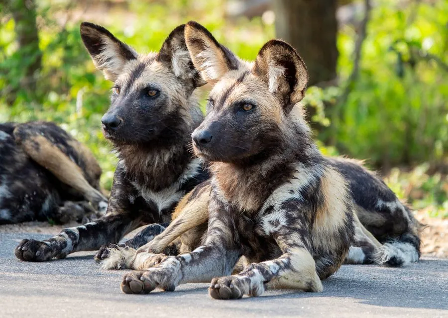

哺乳动物 · 动物界
非洲野犬 Lycaon pictus

非洲草原上成群狩猎的犬科动物，三色花斑的皮毛与四趾前足是标志，群体协作使狩猎成功率非常高。
- 分类
- 门脊索动物门纲哺乳纲目食肉目科犬科属非洲野犬属
- 栖息环境
- 稀树草原、疏林与灌丛，避开茂密森林和沙漠
- 地理分布
- 非洲撒哈拉以南，从南非到东非、西非的保护区
- 保护级别
- IUCN 濒危（EN）
物种志
非洲野犬体长 0.75–1.1 米，尾长 0.3–0.4 米，体重 17–36 kg，体形修长。它的被毛呈黑、黄、白三色斑驳分布，每只个体的花纹都不同；耳朵大而圆，前足只有 4 趾（其他犬科为 5 趾），四肢细长，适合长距离奔跑。
非洲野犬分布于非洲撒哈拉以南的稀树草原、疏林和灌丛，避开茂密森林和沙漠。它们以 6–20 只的群体生活，由一对繁殖首领带领，捕猎时轮流追击猎物，依靠耐力把瞪羚、黑斑羚甚至角马拖垮，狩猎成功率可达 70%–80%，在非洲食肉动物中名列前茅。群体成员会把食物反刍给留守的幼崽和保姆；雌兽妊娠期约 70 天，每胎 6–12 仔。由于栖息地破碎、传染病和人兽冲突，非洲野犬被列为濒危，全球成熟个体估计不足 7000 只。
形态与习性
- 食性瞪羚、黑斑羚等中小型有蹄类，群体协作追击
- 体长0.75–1.1 m，尾长 0.3–0.4 m
- 体重17–36 kg
- 寿命野外约 10–12 年
- 繁殖妊娠期约 70 天，每胎 6–12 仔
- 狩猎成功率约 70%–80%
- 前足只有 4 趾，是犬科中独特的特征
趣味知识
- 非洲野犬的狩猎成功率可达 70%–80%，在非洲食肉动物中最高。
- 它每只前足只有 4 趾，其余犬科动物是 5 趾。
- 群体狩猎时会轮流领跑，用耐力耗尽猎物体力。
- 群体成员会把食物反刍给留守洞穴的幼崽和保姆。